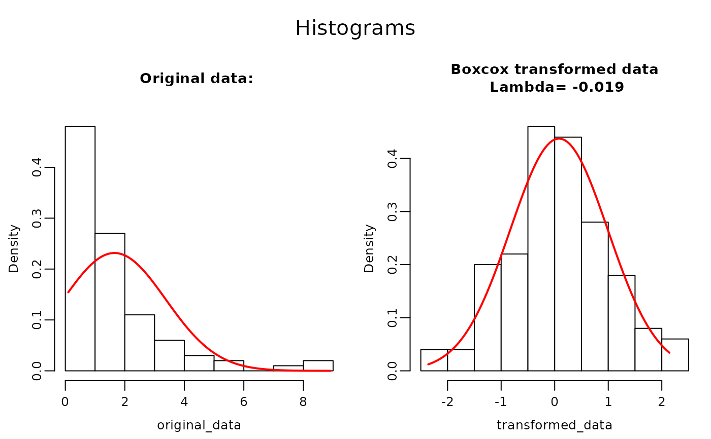
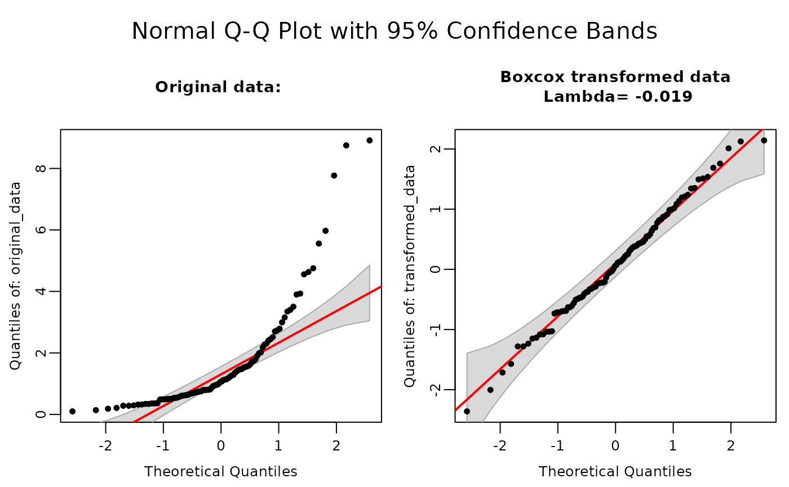
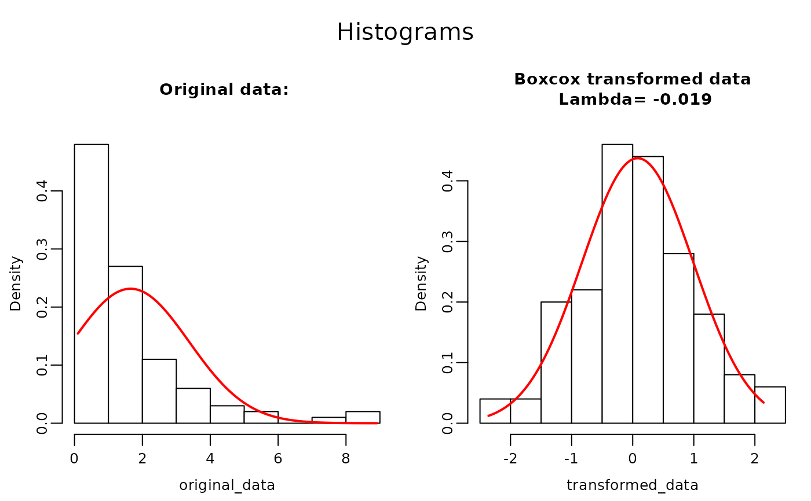
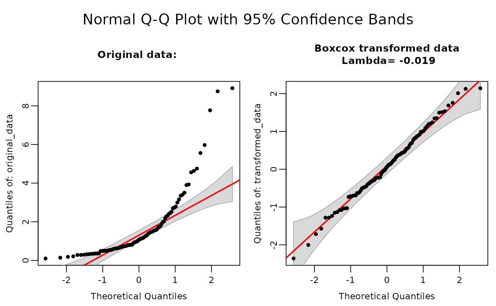

f_boxcox: A User-Friendly Box-Cox Transformation
f_boxcox.RdPerforms a Box-Cox transformation on a dataset to stabilize variance and make the data more normally distributed. It also provides diagnostic plots and tests for normality. The transformation is based on code of MASS/R/boxcox.R. The function prints \(\lambda\) to the console and returns (output) the transformed data set.
Usage
f_boxcox(
data = data,
digits = 3,
range = c(-2, 2),
plots = FALSE,
transform.data = TRUE,
eps = 1/50,
xlab = expression(lambda),
ylab = "log-Likelihood",
alpha = 0.05,
open_generated_files = TRUE,
close_generated_files = FALSE,
output_type = "off",
save_as = NULL,
save_in_wdir = FALSE,
...
)Arguments
- data
A numeric vector or a data frame with a single numeric column. The data to be transformed.
- digits
Numeric. Determines the accuracy of the estimate for lambda. Higher values increase computation time. Defaults to
3.- range
A numeric vector of length 2 defining the search interval for lambda. Defaults to
c(-2, 2).- plots
Logical. If
TRUE, plots log-likelihood of the Box-Cox transformation, Histograms and Q-Q plots of the original and transformed data. Default isFALSE.- transform.data
Logical. If
TRUE, returns the transformed data. Default isTRUE.- eps
A small positive value used to determine when to switch from the power transformation to the log transformation for numerical stability. Default is
1/50.- xlab
Character string. Label for the x-axis in plots. Default is an expression object representing \(\lambda\).
- ylab
Character string. Label for the y-axis in plots. Default is "log-Likelihood".
- alpha
Numeric. Significance level for the Shapiro-Wilk test of normality. Default is
0.05.- open_generated_files
Logical. If
TRUE, opens the generated output files ('pdf', 'Word' or 'Excel') files depending on the output format. This to directly view the results after creation. Files are stored in tempdir(). Default isTRUE.- close_generated_files
Logical. If
TRUE, closes open 'Word' files depending on the output format. This to be able to save the newly generated files. 'Pdf' files should also be closed before using the function and cannot be automatically closed.- output_type
Character string specifying the output format:
"pdf","word","rmd","off"(no file generated) or"console". The option"console"forces output to be printed. Default is"off".- save_as
Character string specifying the output file path (without extension). If a full path is provided, output is saved to that location. If only a filename is given, the file is saved in
tempdir(). If only a directory is specified (providing an existing directory with trailing slash), the file is named "data_name_aov_output" in that directory. If an extension is provided the output format specified with option "output_type" will be overruled. Defaults tofile.path(tempdir(), "data_name_summary.pdf").- save_in_wdir
Logical. If
TRUE, saves the file in the working directory. Default isFALSE, this avoid unintended changes to the global environment. Ifsave_aslocation is specifiedsave_in_wdiris overwritten bysave_as.- ...
Additional arguments passed to plotting functions.
Value
An object of class 'f_boxcox' containing, among others, results from the boxcox transformation, lambda, the input data, transformed data, Shapiro-Wilk test on original and transformed data. Using the option "output_type", it can also generate output in the form of: R Markdown code, 'Word', or 'pdf' files. Includes print and plot methods for 'f_boxcox' objects.
Details
The function uses the following formula for transformation: $$ y(\lambda) = \begin{cases} \frac{y^\lambda - 1}{\lambda}, & \lambda \neq 0 \\ \log(y), & \lambda = 0 \end{cases} $$
where (\(y\)) is the data being transformed, and (\(\lambda\)) the transformation parameter, which is estimated from the data using maximum likelihood. The function computes the Box-Cox transformation for a range of \(\lambda\) values and identifies the \(\lambda\) that maximizes the log-likelihood function. The beauty of this transformation is that, it checks suitability of many of the common transformations in one run. Examples of most common transformations and their \(\lambda\) value is given below:
| \(\lambda\)-Value | Transformation |
| ———————– | ———————– |
| -2 | \(\frac{1}{x^2}\) |
| -1 | \(\frac{1}{x} \) |
| -0.5 | \(\frac{1}{\sqrt{x}}\) |
| 0 | \(log(x)\) |
| 0.5 | \(\sqrt{x}\) |
| 1 | \(x\) |
| 2 | \(x^2\) |
| ———————– | ———————– |
If the estimated transformation parameter closely aligns with one of the values listed in the previous table, it is generally advisable to select the table value rather than the precise estimated value. This approach simplifies interpretation and practical application.
The function provides diagnostic plots: a plot of log-likelihood against \(\lambda\) values and a Q-Q plot of the transformed data.It also performs a Shapiro-Wilk test for normality on the transformed data if the sample size is less than or equal to 5000.
Note: For sample sizes greater than 5000, Shapiro-Wilk test results are not provided due to limitations in its applicability.
This function requires [Pandoc](https://github.com/jgm/pandoc/releases/tag) (version 1.12.3 or higher), a universal document converter.
Windows: Install Pandoc and ensure the installation folder
(e.g., "C:/Users/your_username/AppData/Local/Pandoc") is added to your system PATH.macOS: If using Homebrew, Pandoc is typically installed in "/usr/local/bin". Alternatively, download the .pkg installer and verify that the binary’s location is in your PATH.
Linux: Install Pandoc through your distribution’s package manager (commonly installed in "/usr/bin" or "/usr/local/bin") or manually, and ensure the directory containing Pandoc is in your PATH.
If Pandoc is not found, this function may not work as intended.
References
The core of calculating \(\lambda\) and the plotting was taken from:
file MASS/R/boxcox.R copyright (C) 1994-2004 W. N. Venables and B. D. Ripley
Some code to present the result was taken and modified from file:
rcompanion/R/transformTukey.r. (Developed by Salvatore Mangiafico)
The explanation on BoxCox transformation provided here was provided by r-coder:
Author
Sander H. van Delden plantmind@proton.me
Salvatore Mangiafico, mangiafico@njaes.rutgers.edu
W. N. Venables and B. D. Ripley
Examples
# Create non-normal data in a data.frame or vector.
df <- data.frame(values = rlnorm(100, meanlog = 0, sdlog = 1))
# Store the transformation in object "bc".
bc <- f_boxcox(df$values)
# Print lambda and Shaprio.
print(bc)
#> Box-Cox
#> --------
#> According to the Shapiro-Wilk test ( 2.923e-12 < 0.05 ) original data is:
#> NOT normally distributed. Transformation will be applied...
#>
#> Formula used for transformation:
#> { (x^λ - 1) / λ } if λ != 0
#> { log(x) } if λ == 0
#>
#> Box-Cox Transformation λ = -0.019
#> According to the Shapiro-Wilk test ( 0.9528 > 0.05 ) data is
#> normally distributed after transformation.
# Plot the QQ plots, Histograms and Lambda Log-Likelihood estimation.
plot(bc)
 
# Or Directly use the transformed data from the f_boxcox object.
df$values_transformed <- f_boxcox(df$values)$transformed_data
print(df$values_transformed)
#> [1] -0.23068155 1.53585356 0.07046118 0.12912907 1.68742230 0.45890387
#> [7] -1.28038739 -0.69135420 -0.44755415 1.20995694 0.35858670 0.39924945
#> [13] 0.11056642 -0.55878661 1.75691948 0.49550326 -2.00382113 0.69670354
#> [19] -0.47492133 -1.07872969 -0.21842691 -1.03607026 -0.73396179 -0.62876541
#> [25] -1.71401123 0.83115436 0.15314986 -1.15053200 1.23899832 0.42474110
#> [31] -0.29590017 0.88755676 0.87084843 0.81520186 0.68415470 0.55101302
#> [37] -0.06194814 -0.30685371 -0.38184952 -0.69931209 -0.20832850 -1.28073066
#> [43] 2.12487209 1.19420531 -1.13517732 -0.40443078 -0.46873027 0.77421428
#> [49] -0.08343513 0.25270987 -0.02855450 -0.04288792 1.35096134 -0.22625592
#> [55] 1.49483194 -1.57176501 0.58137889 0.12370863 0.21549918 0.37827357
#> [61] -0.50472822 -0.33426437 -1.02849548 -1.08277868 0.30265509 0.44630671
#> [67] 0.05297755 0.91423398 2.01067104 -0.49332887 -2.36057439 0.99619010
#> [73] -0.71400047 -0.69252516 1.01564389 -0.28554481 -1.23498424 0.18099156
#> [79] -0.13907479 0.00576387 0.38387365 -0.37196830 0.64044800 -0.22094904
#> [85] 0.33073840 1.08548896 0.43338730 -0.32694287 1.13636063 0.98418561
#> [91] 0.54554983 0.23819112 -0.63166654 1.34321498 -0.60369560 2.14250411
#> [97] 1.51051115 -0.23622892 -1.03649491 -0.71522264


# Or Directly use the transformed data from the f_boxcox object.
df$values_transformed <- f_boxcox(df$values)$transformed_data
print(df$values_transformed)
#> [1] -0.23068155 1.53585356 0.07046118 0.12912907 1.68742230 0.45890387
#> [7] -1.28038739 -0.69135420 -0.44755415 1.20995694 0.35858670 0.39924945
#> [13] 0.11056642 -0.55878661 1.75691948 0.49550326 -2.00382113 0.69670354
#> [19] -0.47492133 -1.07872969 -0.21842691 -1.03607026 -0.73396179 -0.62876541
#> [25] -1.71401123 0.83115436 0.15314986 -1.15053200 1.23899832 0.42474110
#> [31] -0.29590017 0.88755676 0.87084843 0.81520186 0.68415470 0.55101302
#> [37] -0.06194814 -0.30685371 -0.38184952 -0.69931209 -0.20832850 -1.28073066
#> [43] 2.12487209 1.19420531 -1.13517732 -0.40443078 -0.46873027 0.77421428
#> [49] -0.08343513 0.25270987 -0.02855450 -0.04288792 1.35096134 -0.22625592
#> [55] 1.49483194 -1.57176501 0.58137889 0.12370863 0.21549918 0.37827357
#> [61] -0.50472822 -0.33426437 -1.02849548 -1.08277868 0.30265509 0.44630671
#> [67] 0.05297755 0.91423398 2.01067104 -0.49332887 -2.36057439 0.99619010
#> [73] -0.71400047 -0.69252516 1.01564389 -0.28554481 -1.23498424 0.18099156
#> [79] -0.13907479 0.00576387 0.38387365 -0.37196830 0.64044800 -0.22094904
#> [85] 0.33073840 1.08548896 0.43338730 -0.32694287 1.13636063 0.98418561
#> [91] 0.54554983 0.23819112 -0.63166654 1.34321498 -0.60369560 2.14250411
#> [97] 1.51051115 -0.23622892 -1.03649491 -0.71522264
